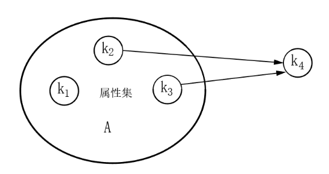
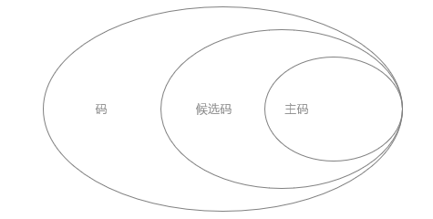

函数依赖 Function Dependency
- 函数依赖
-
设关系R(U,F)，U是属性集，F是函数依赖集，令X、Y是U的两个子集；对于任意R的一个关系r，X的每一个具体值，Y都有唯一值与之对应， 则，X决定函数Y，或Y函数依赖于X，记作X→Y
- . 对于定义域中任意 X ，有且只有一个 Y 与之对应。
- . 属性之间的依赖：对于相同的 X 属性值，有且只有一个 Y 属性值与之对应
- . 本质就是反映了一个关系中属性之间的约束关系，或者依赖关系
- . 是一种数据依赖
- 平凡依赖
- . 你是我的子集，我能控制你当然没有问题
- X→Y，但Y⊆X，称X→Y是平凡的函数依赖
- 非平凡依赖
- . 你不是我的子集，我还能控制你，那才叫本身
- X→Y，但Y⊈X，称X→Y是非平凡的函数依赖
- 注意：如无说明，都是指非平凡依赖
- 完全依赖 Full Functional Dependency
-
设R为任一给定关系，X、Y为其属性集，若 X→Y，且X中的任何真子集X'，都有 X'!→Y，则称 Y 完全函数依赖于 X。
- . 属性组 X 的 所有属性 一起（即完全）才能决定属性 Y，去掉任何一个子集|单独的属性都不行
- . AB能得出C，但是单独的A、B得不出C，那么说C完全依赖于AB
- . (学号，课名)->成绩，而单独的学号或者课名都不能确定成绩
- 部分函数依赖 Partial Functional Dependency
- 设R为任一给定关系，X、Y为其属性集，若 X→Y，且X中存在一个真子集X'，满足 X'→Y，则称 Y 部分函数依赖于 X。
- . 属性组 X 中的 部分属性 如A或B就可以决定 Y，用不着全部；所以会存在属性冗余
- . 通过AB能得出C，通过A也能得出C，通过B也能得出C，那么说C部分依赖于AB
- . 只有当决定因素是 组合属性 时，讨论部分函数依赖才有意义；当决定因素是 单属性 时，只能是完全函数依赖
-
 部分函数依赖 - 传递函数依赖
- A→B，B→C，则A→C；其中 B ⊄ A，即B不能是A的子集
- 推理规则
- 增广律：若X→Y在R上成立，且Z ⊆ U，则XZ→YZ
- 传递律：X→Y和Y→Z在R上成立，则X→Z
- 伪传递规则：若X→Y和YW→Z在R上成立，则XW→Z
- 合并规则：若X→Y和X→Z在R上成立，则X→YZ
- 复合规则：若X→Y和W→Z在R上成立，则XW→YZ
- 函数依赖为F={A→B,AE→H,BG→DC,E→C,H→E}，下列哪个函数依赖不成立?
-
A→ABH→CAEB→CA→BH
-
ok A→A, A→B，所以AA→AB，即A→AB传递E→C推出AEB→ABC，ABC→C∴ D
- 对应关系模式R(X,Y,X)，下列结论错误的是（）
-
X→Y,Y→Z,则X→ZX→Z，则XY→ZXY→Z，则X→Z,Y→ZX→Y,X→Z，则X→YZ
-
OK 传递OK 小集合能推导出，大集合肯定也可以∴ COK 合并
- 关系R（A1,A2,A3）上的函数依赖F={A1→A2,A1→A3,A2→A3}，则（）。
-
A1→A2是多余的A1→A3是多余的A2→A3是多余的都不是多余的
- ∴ B
码 Keys
- 键字=码字，所以：主码=主码=主关键字，候选码=候选码=候选关键字
- 码 Key
- . 码是数据库系统中的基本概念，也叫超码
- . 能唯一标识实体|元组|记录|的属性或属性的集合，它是整个实体集的性质，而不是单个实体的性质
- . 只要能唯一确定一条记录，都被称为码
- . 如果K是一个码，那么所有包含K的集合也是码|即使有多余也是
- . 标识性：一个数据表的所有记录都具有不同的码
- . 非空性：不能为空
- 候选码 Candidate Key
- . 能够唯一标识一条记录的 最小属性集
- . 没有冗余属性；候选码中的所有属性都是必须的，缺少了任何一个属性，就不能唯一标识一个元组
- . 不唯一，可以有多个
- . 标识性：一个数据表的所有记录都具有不同的超键
- . 最小性：候选码是最小的码，它的任意真子集都不能成为码
- . 非空性：不能为空
- 主码 Primary Key
- . 从候选码里人为挑选的一个
- . 被数据库设计者选中的，用来在同一实体集中区分不同实体的候选码
- . 唯一性
-
 码、候选码、主码的关系 - 外键 Foreign key
- . 其他关系的主键
- . 子数据表中出现的父数据表的主键，称为子数据表的外键
- 全码 All Key
- . 当所有的属性共同构成一个候选码时，这时该候选码为全码
- . 整个属性组都是码
- 属性 Attribute
- . 表中的一列为一个属性
- 主属性 Prime Attribute
- . 包含在任一候选码中的属性称主属性
- . 简单来说，主属性是 候选码所有属性的并集
- . 不单单指主码的属性；只要是候选码的属性就是主属性，不管你有没有入围主码
- . 用实下划线表示
- . 不唯一
- 非主属性 Not-Prime Attribute
- . 不包括在任何候选码中的属性
- . 用虚下划线表示或不特别表示
- . 不唯一
候选码的确定
-
函数依赖中属性的位置 分类 位置 预判 L 仅出现在函数依赖左部 一定包含在任意一个候选码中 R 仅出现在函数依赖右部 不包含在任意一个候选码中 LR 在函数依赖左部和右部均出现 可能包含在某个候选码中 N 在函数依赖左部和右部均不出现 一定包含在任意一个候选码中 - 基本步骤
-
求出每个属性的位置，根据位置划分到不同的集合，如L={}、LR={}、R={}、N={}将所有的L类和N类组合起来 X = L⋃N 求闭包，判断是否是全集U；如果是，则 X 就是唯一候选码，算法终止，不需要再验证其它组合若构不成全集U，则 X 分别|依次和LR中的某1个属性结合，求闭包再判断；可能有多个候选码若构不成全集U，则 X 分别|依次和LR中的某2个属性结合，求闭包再判断；可能有多个候选码依次类型，通常和LR中某个1个属性结合就已经求出结果了
- 已知R<U,F>，U={A,B,C,D}，F={A→C,C→B,AD→B}，求候选码
-
属性 位置 闭包集 A L (AD)+→ACD→ACBD→U B R C LR D L - ∴ 候选码是{AD}
- 已知R<U,F>，U={A,B,C}，F={AB→C,C→B}，求候选码
-
属性 位置 闭包集 A L 依次和B、C结合求闭包再判断
(AB)+→ABC→U
(AC)+→ACB→UB LR C LR - ∴ 候选码是{AB,AC}
- 已知已知R<U,F>，U={A,B,C,D,E}，F={B→A,D→A,A→E,AC→B}，求候选码
-
属性 位置 闭包集 A LR CD结合求闭包再判断
(CD)+→CDA→CDAE→CDAEB→UB LR C L D L E R - ∴ 候选码是{CD}
-
选择题的解答中，要学会筛选；比如某个属性在R，则它一定不是候选码；如某个属性是NLR，则一定是
- 某企业的培训关系模式R（培训科目，培训师，学生，成绩，时间，教室），R的函数依赖集 F={培训科目→培训师，（学生，培训科目）→成绩，（时间，教室）→培训科目，（时间，培训师）→教室，（时间，学生）→教室}。关系模式R的主键为 （请作答此空） ，其规范化程度最高达到 （ ） 。
-
（学生，培训科目）（时间，教室）（时间，培训师）（时间，学生）
- [参考答案]D；可以推出其它